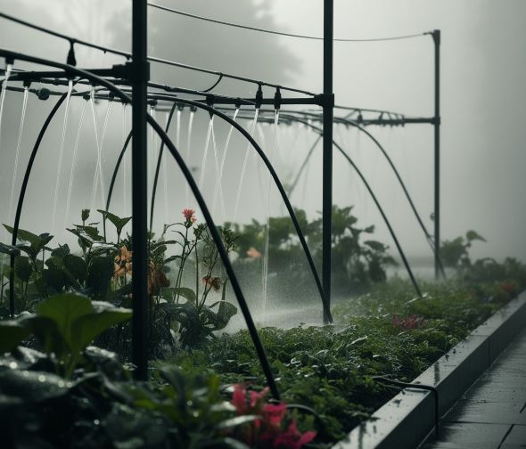
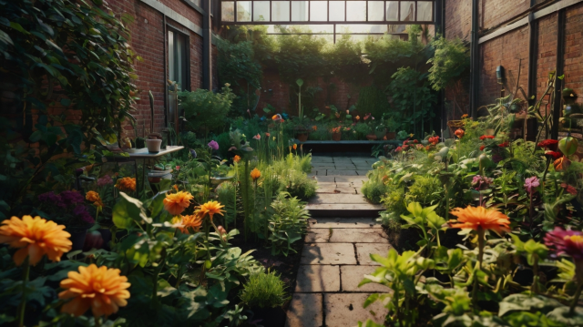
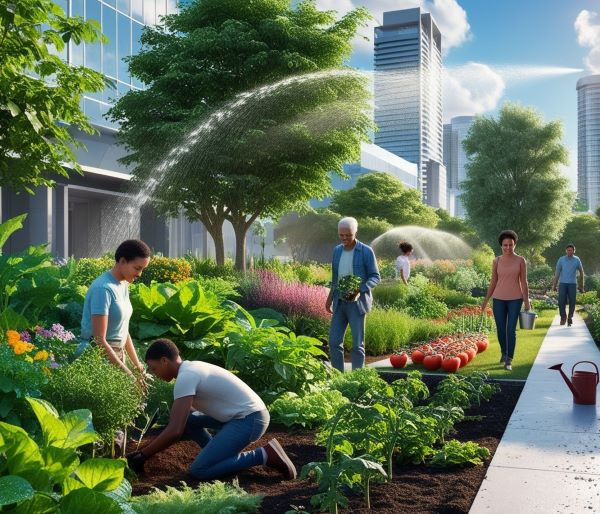

O que é a Agricultura Urbana?
É prática que compreende o exercício de diversas atividade relacionadas à produção de alimentos e conservação dos recursos naturais dentro dos centros urbanos ou em suas respectivas periferias, surge como estratégia efetiva de fornecimento de alimentos, de geração de empregos, além de contribuir para a segurança alimentar e melhoria da nutrição dos habitantes das cidades.

Horta Urbana



Exemplos

Contato
André
E-mail: andre.marafon.correia@escola.pr.gov.br
Telefone: (43)99672-8234
Endereço: Rua São Paulo,298-Ribeirão do Pinhal, PR, 86490-000